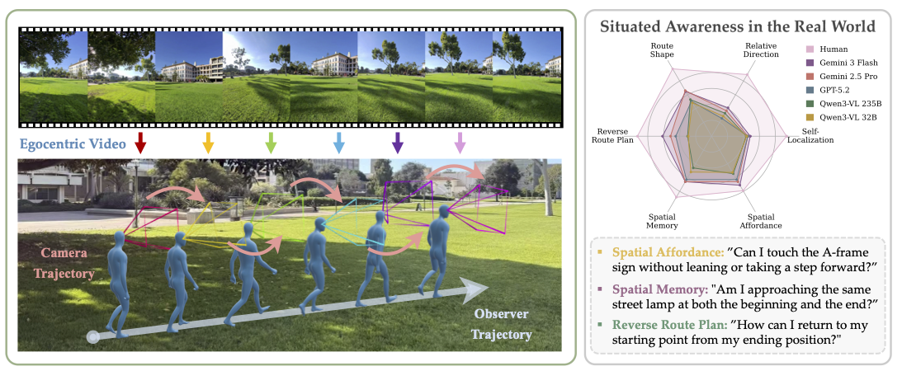
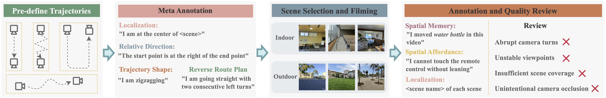
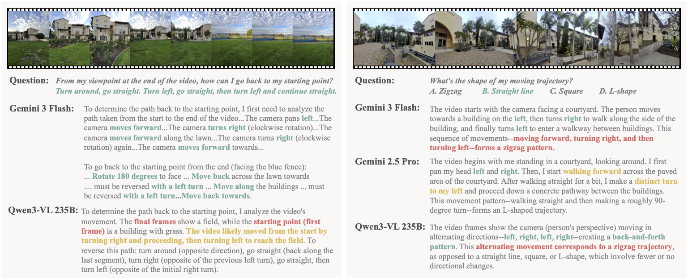
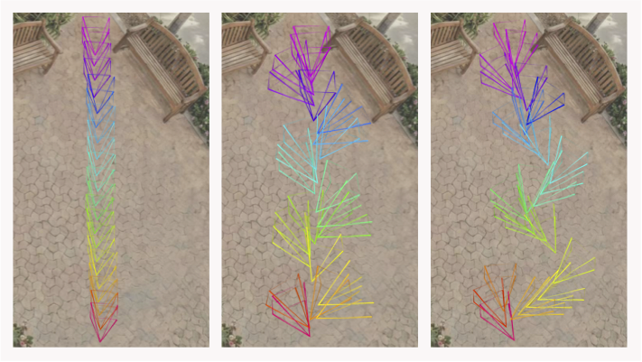
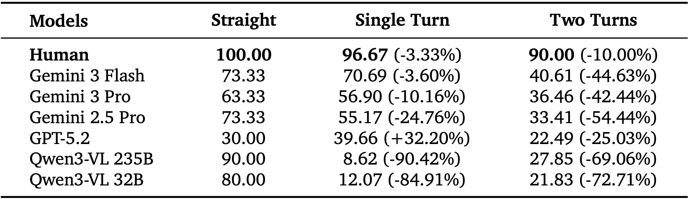
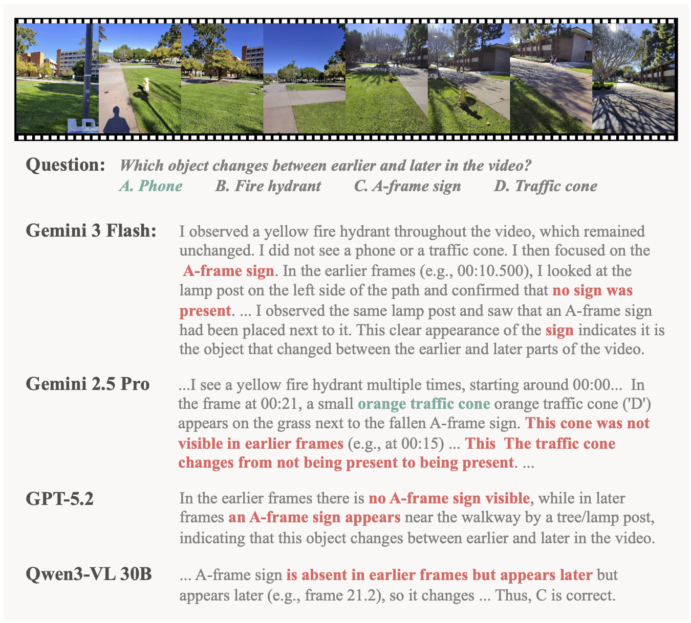
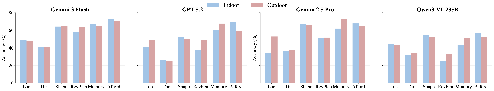

1University of California, Santa Barbara,2Yale University,3Stanford University, 4University of Maryland, College Park,5Amazon,6University of California, Merced
Key Insights:
Current models do not maintain an observer-centric spatial state.

Figure 1: (Left) Situated Awareness in the Real World.
A real-world example in which the observer walks along a straight trajectory while frequently rotating their head. The resulting egocentric video exhibits substantial camera orientation changes despite linear translational motion.
(Right) Reasoning Task Performance. Radar plot compares human performance with representative MFMs across six situated awareness tasks in SAW-Bench.
A core aspect of human perception is situated awareness, the ability to relate ourselves to the surrounding physical environment and reason over possible actions in context. However, most existing benchmarks for multimodal foundation models (MFMs) emphasize environment-centric spatial relations (relations among objects in a scene), while largely overlooking observer-centric relationships that require reasoning relative to an agent's viewpoint, pose, and motion. To bridge this gap, we introduce SAW-Bench (Situated Awareness in the Real World), a novel benchmark for evaluating egocentric situated awareness using real-world videos. SAW-Bench comprises 786 self-recorded videos captured with Ray-Ban Meta (Gen 2) smart glasses across diverse indoor and outdoor environments, along with over 2,071 human-annotated question-answer pairs. It probes a model's observer-centric understanding through six distinct awareness tasks. Our comprehensive evaluation reveals a 37.66% human-model performance gap, even for the best-performing MFM, Gemini 3 Flash. Beyond this gap, our in-depth analysis uncovers systematic failure modes: although models can exploit partial geometric cues in egocentric videos, they frequently fail to infer a coherent camera geometry, resulting in consistent spatial reasoning errors. We position SAW-Bench as a benchmark for situated spatial intelligence, moving beyond passive observation to understanding physcially grounded, observer-centric dynamics.
SAW-Bench Data Viewer
[Route Shape] What's the shape of my moving trajectory?
[Self-Localization] Am I located at the corner, along the side, or near the center of the office?
[Relative Direction] From my viewing point at the end of the video, where am I located at the beginning of the video?
[Route Shape] What's the shape of my moving trajectory?
[Reverse Route Plan] From my viewpoint at the end of the video, how can I go back to my starting point?
[Spatial Memory] Which object changes between earlier and later in the video?
[Spatial Affordance] Can I touch the microwave using only arm, without leaning or position change?
[Spatial Affordance] Can I reach forward and touch the coffee cup by sitting up from the couch, without standing up or changing my position?
SAW-Bench
Benchmark Overview: SAW-Bench is a designed to evaluate observer-centric spatial reasoning from egocentric videos. Unlike prior benchmarks that emphasize scene-centric or object-object relationships, SAW-Bench focuses on situated awareness: the ability to reason about space, motion, and possible actions relative to the observer's own viewpoint as it evolves over time. The benchmark comprises 786 self-recorded real-world egocentric videos captured with wearable cameras across diverse indoor and outdoor environments, paired with 2,071 human-annotated question-answer pairs. SAW-Bench evaluates six core awareness tasks, including self-localization, relative direction, route shape, reverse route planning, spatial memory, and spatial affordance. Together, these tasks require models to maintain a coherent observer-centric spatial state, integrate egocentric motion over time, and reason beyond static visual cues.
Figure 2: Overview of SAW-Bench.
We illustrate six representative tasks evaluating different aspects of situated awareness: Self-Localization, Relative Direction, Route Shape, Reverse Route Plan, Spatial Memory, and Spatial Affordance. During data collection, human annotators follow pre-defined trajectories when recording egocentric videos; these trajectories are visualized as purple dashed arrows. For all tasks, the model input consists solely of egocentric video without access to any bird's-eye or global scene representations; the visualizations shown here are provided for illustrative purposes only.
Video Collection:
All videos in SAW-Bench are recorded from an egocentric perspective using Ray-Ban Meta (Gen 2) smart glass worn by human participants. Most videos are captured as single, continuous clips without interruption. For tasks involving Spatial Memory, we apply limited post-processing by concatenating two short clips recorded in the same physical scene: one before and one after a controlled modification of the environment. No other temporal reordering or editing is performed. Audio is excluded from all videos to ensure that all reasoning is grounded solely in visual information.
Our video collection process spans a diverse set of real-world environments, including both outdoor scenes (e.g., courtyards, parking lots, lawns, and plazas) and indoor scenes (e.g., lecture halls, classrooms, recreation rooms, and household environments). Within each scene, we collect approximately 40-60 distinct videos to support tasks that benefit from dense coverage of a fixed environment, such as Self-Localization and Route Shape. For tasks that are more difficult to scale within a limited set of scenes, particularly Spatial Memory and Spatial Affordance, we additionally collect a set of videos across a broader range of environments outside these core scenes. This supplemental collection prioritizes diversity over dense coverage, enabling evaluation of memory and action feasibility across varied layouts and physical constraints without requiring exhaustive sampling of each scene.

Figure 3: Benchmark Curation Pipeline.
We first pre-define 37 camera trajectories and annotate their metadata. Human video collectors then record egocentric videos by following these trajectories in selected scenes. Low-quality recordings are filtered and re-captured to ensure consistent video quality.
Video Collection Protocol:
During video collection, participants followed a lightweight recording protocol, consisting of high-level guidelines intended to ensure consistency across scenes while preserving natural behavior. For tasks involving Self-Localization, participants were instructed to record videos from a set of predefined reference locations (e.g., corners, side, or center) to ensure coverage of diverse viewpoints. Beyond these coverage requirements, the protocol did not prescribe specific paths, motions, or camera poses. Instead, participants were instructed to follow coarse trajectory shapes (e.g., zigzag or two consecutive turns), while retaining flexibility in how these shapes were executed within each environment.
SAW-Bench Leaderboard
Unless otherwise specified, all models process videos at 2 fps (frames per second).
Bold and underlined numbers indicate the best and second-best performance in each category, respectively.
*: Models do not support fps-based sampling and process a fixed total of 32 frames per video.
‡: 8 frames per video sampling due to compute limitations.
Model
All
Self-Localization
Relative Direction
Route Shape
Reverse Route Plan
Spatial Memory
Spatial Affordance
Baselines
Human Level
91.55
94.00
89.39
97.62
93.01
88.50
79.01
Chance Level (Random)
27.49
34.00
25.90
21.43
27.51
28.00
56.17
Chance Level (Frequent)
29.55
38.00
25.90
27.11
27.51
27.00
50.62
Blind LLM (GPT-5.2)
31.34
38.00
23.02
36.63
24.02
38.00
54.32
Socratic Model (GPT-5.2)
31.34
40.50
20.62
41.58
24.02
32.00
50.62
Proprietary Multimodal Foundation Models
Gemini 3 Flash
53.89
48.50
41.13
64.84
61.57
66.00
70.99
Gemini 2.5 Pro
50.80
45.50
37.05
66.12
51.53
66.00
66.05
Gemini 3 Pro
45.97
50.00
38.61
52.01
36.24
63.00
61.73
GPT-5.2
41.04
45.50
25.78
50.55
44.98
63.00
62.96
Gemini 2.5 Flash
39.79
44.00
25.30
57.33
37.99
49.00
46.91
GPT-5 Mini
33.80
43.50
27.46
36.08
22.27
56.00
49.38
Open-Source Multimodal Foundation Models
Qwen3-VL 235B-A22B
41.40
43.50
33.41
53.11
30.13
46.00
54.32
Qwen3-VL 32B
38.58
44.00
29.14
48.35
29.26
52.00
52.47
Qwen3-VL 30B-A3B
36.55
39.00
29.62
43.04
27.07
54.00
50.00
Qwen2.5-VL 32B
36.46
53.00
28.06
41.03
24.89
45.00
54.94
Qwen2.5-VL 72B
36.17
51.50
26.74
41.76
25.33
45.00
56.79
Qwen3-VL 8B
36.12
40.00
27.82
46.70
23.58
48.00
48.77
LLaVA OneVision 72B *
33.70
39.00
22.30
46.15
24.45
41.00
52.47
InternVL3 8B *
33.70
43.50
26.86
36.45
27.95
46.00
48.15
LLaVA-Video 72B *
32.98
32.50
23.86
43.04
24.45
41.00
53.70
InternVL3 14B *
32.69
49.00
17.27
45.05
24.02
54.00
49.38
Qwen2.5-VL 7B
31.48
38.50
19.06
43.59
26.20
38.00
49.38
LLaVA-NeXT-Video 32B *
31.24
41.00
24.46
35.35
22.27
34.00
51.23
LLaVA-Video 7B *
30.81
41.00
25.06
32.78
24.45
32.00
49.38
InternVL2 40B ‡
30.13
45.00
17.75
38.28
24.89
32.00
54.32
InternVL2 8B *
29.84
43.00
14.99
41.94
24.89
40.00
50.00
LLaVA OneVision 7B *
29.45
34.50
20.26
34.80
25.33
44.00
49.38
InternVL3 38B ‡
27.71
35.50
23.50
37.55
24.45
46.00
51.23

Figure 4: Error Case Analysis.(Left)Reverse Route Plan: Gemini 3 Flash successfully reconstructs the return path by systematically inverting the actions from the forward pass. In contrast, Qwen3-VL 235B attempts to exploit a shortcut between the first and last frames, thereby neglecting the transitive dynamics and spatial transformations occurring throughout the frame sequence. (Right)Route Shape: While both Gemini 3 Flash and Qwen3-VL 235B effectively identify camera rotations, they falsely integrate these rotational pans into the observer's physical movement trajectory, leading to incorrect shape understanding.
Findings and Insights
We conducted comprehensive evaluation of 24 state-of-the-art multimodal foundation models in SAW-Bench.
Our experiments reveal critical insights about the current state and limitations of situated awareness understanding in MFMs.

Figure 5:
Camera Rotation and Observer's Trajectory. Visualization of three controlled scenarios used to isolate the impact of head rotation on Route Shape. (Left) a straight path with steady head orientation; (Middle) the same straight path with frequent left-and-right head rotations; and (Right) a true zigzag trajectory.
Camera rotation as a source of trajectory errors.
We identify a systematic failure mode in Route Shape occurring when changes in camera rotation are decoupled from the observer's translational movement. To isolate this effect, we compare three controlled scenarios:
(1) a straight path with stable head ori- entation (Figure 5 Left);
(2) the same straight path with frequent head rotations (Figure 5 Middle); and
(3) a true zigzag trajectory (Figure 5 Right).
Despite identical translational motion in cases (1) and (2), even top-performing models frequently misclassify case (2) as a zigzag trajectory: Gemini 3 Flash does so in 60.0% of instances, while Qwen3-VL 235B misclassifies 53.3% of cases. As illustrated in Figure 4 Right, models justify these predictions by erroneously attributing camera orientation shifts to physical body displacement. This failure highlights a fundamental limitation in current MFMs: the inability to maintain a robust observer-centric coordinate system that distinguishes egocentric rotational pans from global positional updates.
Key Finding 1
Current MFMs often conflate egocentric camera rotation with translational movement.
Trajectory complexity and error accumulation.
Spatial updating is an inherently accumulative process, where errors in estimating egocentric motion compound as the observer moves through an environment. In human navigation, this integration is highly sensitive to "noise" introduced by changes in orientation.
To investigate whether MFMs exhibit a similar sensitivity to trajectory complexity, we stratify results on the Relative Direction task by geometric complexity:
(1) Straight (pure translation),
(2) Single Turn (one rotational update), and
(3) Two Turns (multiple rotational updates).
As shown in Table 1, increasing geometric complexity is associated with a substantial accuracy degradation for most models, particularly when trajectories involve multiple orientation changes.
When quantified using relative performance drop with respective to straight trajectories, MFMs often exhibit significant degradation under multi-turn conditions, while human performance remains largely stable.
This human-model gap suggests that current MFMs struggle to reliable integrate successive egocentric orientation changes over time, resulting in compounding errors as trajectories move away from simple translational motion.

Table 1: Accuracy (%) on Relative Direction Tasks Stratified by the Number of Turns.
Performance for most models degrades significantly as geometric complexity increases.
Key Finding 2
Model accuracy degrades significantly as trajectory complexity increases.

Figure 6:
Model Responses in Spatial Memory. Across multiple models, non-visibility is incorrectly treated as non-existence: objects that exit the camera's field of view are inferred to have disappeared or changed, revealing a gap between what is seen and what exists.
Failure to maintain persistent object memory.
A recurring failure mode across Spatial Memory tasks arises from models' difficulty in maintaining object persistence across egocentric motion. Although models often provide accurate descriptions of what is visible in individual frames or short temporal windows, they fail to reason about objects that leave the camera's field of view. As shown in Figure 6, models tend to infer that objects are absent in earlier frames simply because they are not visible, incorrectly treating first observation as object appearance rather than recognizing that the object may have existed outside the field of view. These errors suggest that current MFMs rely primarily on view-dependent evidence, rather than maintaining a persistent world-state representation over time.
Key Finding 3
Persistent tacking of objects across frames remains an open challenge across models.

Figure 7: Indoor v.s. Ourdoor Performance.
Comparison of zero-shot accuracy across six situated awareness tasks for Gemini 3 Flash, Gemini 2.5 Pro, GPT-5.2, and Qwen3-VL 235B.
Effect of openness on situated awareness. Figure 7 summarizes model performance across indoor and outdoor environments. Contrary to the intuition that larger and more dynamic outdoor environments may increase spatial reasoning difficulty, no consistent performance degradation is observed in outdoor scenes.
Across the four selected models, outdoor performance is often comparable to, and in several cases higher than, indoor performance.
On average, the indoor-outdoor performance gap remains small.
These results suggest that environment scale alone does not determine spatial reasoning difficulty.
While outdoor scenes typically span larger spatial extents, they often contain fewer objects and exhibit less structural clutter than indoor environments, which may reduce relational ambiguity.
As a result, spatial reasoning difficulty is not monotonically correlated with scene size or openness.
Instead, indoor environments can pose equally, if not more, complex spatial challenges due to higher object density and more intricate layout structures.
Key Finding 4
Environment openness alone is an insufficient proxy for spatial reasoning difficulty.
Conclusion
Situated awareness underlies how humans continuously perceive, navigate, and act in the physical world, yet it remains insufficiently captured by existing multimodal evaluation frameworks.
In this work, we introduce SAW-Bench to explicitly evaluate observer-centric situated spatial understanding in MFMs using egocentric videos.
Through a systematic evaluation of 24 models, we uncover fundamental gaps in current MFMs' ability to reason about observer-centric tasks.
Our analysis identifies key factors underlying these limitations, offering insights for advancing MFMs toward more robust situated spatial intelligence.
We hope this work sheds light on the development of AI systems that move beyond passive observation toward physically grounded, observer-centric, and interactive world understanding.